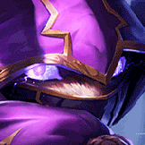

核心裝備
 無限寶珠
無限寶珠敵人被大絕壓低血量後無限寶珠收尾效率很高，是凱能最直接的爆發核心。
 海克斯科技火箭腰帶
海克斯科技火箭腰帶火箭腰帶補進場距離，讓大絕更容易直接覆蓋後排。
 死亡之帽
死亡之帽大量 AP 明顯提高大絕與印記連段的整體傷害。
 虛空之杖
虛空之杖後期敵方開始堆魔抗後補穿透，確保大絕仍能威脅前後排。
 雷霆風暴
雷霆風暴追加爆發與穿透，適合在一輪大絕內快速壓低多人血線。

Kennen · 範圍強開／群體暈眩型法師
凱能在 ARAM 不需要一直正面露頭找消耗，真正的價值是等敵人站位重疊後從側面或草叢進場。7.2b 的 85% 承傷讓他開大後更有機會撐到第二輪印記與中婭。
本站評級理由：7.2b 將 ARAM 承受傷害從 100% 降到 85%，直接補上凱能最怕進場被秒的弱點；單線又很容易讓多人站進大絕範圍，群體暈眩與爆發都能完整發揮。
7.2b 官方 ARAM 調整：凱能承受傷害由 100% 降至 85%，且官方明確標註同樣套用一般 ARAM。
敵人被大絕壓低血量後無限寶珠收尾效率很高，是凱能最直接的爆發核心。
火箭腰帶補進場距離，讓大絕更容易直接覆蓋後排。
大量 AP 明顯提高大絕與印記連段的整體傷害。
後期敵方開始堆魔抗後補穿透，確保大絕仍能威脅前後排。
追加爆發與穿透，適合在一輪大絕內快速壓低多人血線。

凱能雖使用能量，但前期魔攻與法術穿透仍能直接提高爆發。

升級三級鞋後取得更高魔攻與法術穿透，進一步放大大絕進場與範圍爆發。

貼身大絕連段很容易觸發，直接增加第一個被集火目標的爆發。

三技或火箭腰帶進場後能吃到穿透，與凱能的切入節奏完全一致。

大絕、二技與一技會快速連續命中，容易疊高連段傷害。

ARAM 擊殺參與高，越打到中後期 AP 成長越明顯。

即使 7.2b 已有 85% 承傷，骨甲仍能提高第一次進場的容錯。

閃現＋大絕是最可靠的突然開戰方式，也能在大絕期間微調位置。

進場後對敵方主力套虛弱，能讓自己多撐一輪並降低對方反打。
1 技 > 2 技 > 3 技
ARAM 開局三個基礎技能各點 1 級，之後主升 1 技、次升 2 技；大絕能點就點。
用 1 技與強化普攻慢慢疊印記，不要太早用 3 技穿過整個敵陣。沒有大絕前的任務是保持血量與能量，替五級後的第一波團戰做準備。
有大絕就開始找草叢、側邊或隊友控制的進場點。火箭腰帶／閃現貼到後排後立刻開大，2 技通常等多人已有印記再按，暈眩價值更高。
85% 承傷讓你更能扛，但仍不要從正面走過五個人。等敵方主要控制交掉或站位重疊再進場，開大後用中婭拖滿持續時間，通常就是整場最重要的一波。
 水仙三叉戟
水仙三叉戟敵方護盾很多
 女妖面紗
女妖面紗敵方先手控制很多
 峽谷製造者
峽谷製造者敵方多坦且團戰拉很久
看遊戲卡片下方分類 → 點相同分類 → 看左側 S+／S／A。
一、二技能與大絕都能持續造成技能傷害，技能增幅利用率高。
被動可頻繁暈眩，多段大絕也能快速疊出控制效果。
大絕與多段技能很適合雷霆系列的連續命中與大絕強化。
大絕雙放、施放大絕無敵與技能暴擊都能明顯提高進場上限。
三技本身強調高速進場，額外跑速能提高大絕貼人與撤離能力。
7.2b ARAM 凱能攻略：官方確認一般 ARAM 承傷降至 85%；出裝與符文交叉參考 WildRiftFire 7.2b，再依單線多人大絕與中婭進場節奏調整。
ARAM 使用獨立於召喚峽谷的資料集；本站會把官方模式平衡、單線 5v5 特性與出裝／符文適配分開判斷，而不是直接複製峽谷配置。